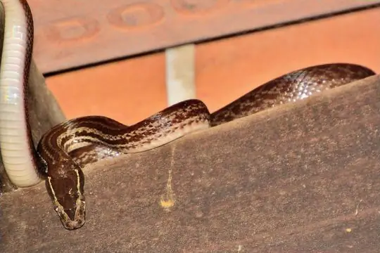
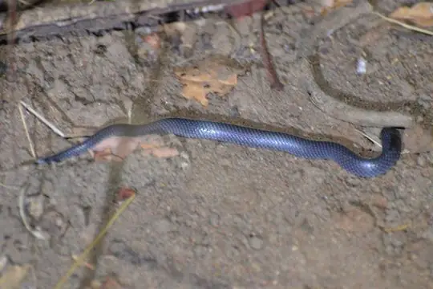

Snakes of Mulanje
A state or province of Malawi
17 snake species are recorded in Mulanje, a state or province of Malawi, in SnakeList: 4 venomous and 13 non-venomous, from 8 families.
- 17species
- 4venomous
- 13non-venomous
- 8families
SnakeList records where snakes live by country and by state or province, not by exact spot, so a species listed here may live in only part of Mulanje. All snakes of Malawi.
Most widely recorded
The species here that have research-grade iNaturalist records in the most places across their whole range - not just in Mulanje. That shows how often people have photographed them, not how many live here.

Brown House Snake (capensis)Boaedon capensis Red-lipped SnakeCrotaphopeltis hotamboeia
Red-lipped SnakeCrotaphopeltis hotamboeia Spotted Bush SnakePhilothamnus semivariegatus
Spotted Bush SnakePhilothamnus semivariegatus Green Water SnakePhilothamnus hoplogaster
Green Water SnakePhilothamnus hoplogaster Snouted Night AdderCausus defilippii
Snouted Night AdderCausus defilippii
East African Shovel-snoutProsymna stuhlmanni Black File SnakeGracililima nyassae
Black File SnakeGracililima nyassae Eastern Vine SnakeThelotornis mossambicanus
Eastern Vine SnakeThelotornis mossambicanus
Snake families
Venomous and non-venomous
Venomous: 4Non-venomous: 13
4 are listed by SnakeList as dangerous to people: Boulenger's Garter Snake Elapsoidea boulengeri, Eastern Vine Snake Thelotornis mossambicanus, Green Mamba Dendroaspis angusticeps, Snouted Night Adder Causus defilippii.
Habitats (rough estimate)
How many of its living snakes have each kind of habitat in SnakeList’s estimate. That estimate comes from every country, state and province where each snake is recorded - not from a survey of Mulanje, and not checked species by species.
Who described them
The scientists who first described its most widely recorded snakes, and when.
- Brown House Snake (capensis) Boaedon capensis -
- Red-lipped Snake Crotaphopeltis hotamboeia -
- Spotted Bush Snake Philothamnus semivariegatus -
- Green Water Snake Philothamnus hoplogaster -
- Snouted Night Adder Causus defilippii -
- East African Shovel-snout Prosymna stuhlmanni -
- Black File Snake Gracililima nyassae -
- Eastern Vine Snake Thelotornis mossambicanus -
Names and dates come from SnakeList’s reviewed species accounts; the others are looked up on Wikidata (CC0) when this page opens.
Neighbouring states and provinces
Places in SnakeList that share a border with Mulanje.
All 17 species
- Black File Snake Gracililima nyassae
- Boulenger's Garter Snake Elapsoidea boulengeri venomous
- Brown House Snake (capensis) Boaedon capensis
- Common File Snake Limaformosa capensis
- East African Shovel-snout Prosymna stuhlmanni
- Eastern Vine Snake Thelotornis mossambicanus venomous
- Forest Marsh Snake Natriciteres sylvatica
- Green Mamba Dendroaspis angusticeps venomous
- Green Water Snake Philothamnus hoplogaster
- Grey-bellied Grass Snake Psammophylax variabilis
- Mlanje White-bellied Water-Snake Lycodonomorphus mlanjensis
- Red-lipped Snake Crotaphopeltis hotamboeia
- Shire Slug Eater Duberria shirana
- Snouted Night Adder Causus defilippii venomous
- Southern Gracile Blind-snake Afrotyphlops obtusus
- Spotted Bush Snake Philothamnus semivariegatus
- Western Green Snake Philothamnus angolensis
No snake here matches that.